| Submitted by | |
| Roll number | |
| Course / Semester | |
| Guided by | |
| Academic year | 2026 – 2027 |
ScriptWell is a modern, responsive online bookstore where customers can discover, compare and buy books, and where an administrator can manage the catalogue, stock and orders. The project combines two subjects. For Advanced Internet Programming, the application is built with Java Servlets, JavaServer Pages (JSP), JSTL, JDBC, HTML5, CSS3, JavaScript and Bootstrap, and follows the Model–View–Controller (MVC) architecture. It runs on Apache Tomcat 10.1 with JDK 17. For PL/SQL, the important business logic is not written in Java. It lives inside an Oracle Database Free 23ai schema as stored packages, procedures, functions, triggers and cursors, with structured exception handling.
The store has 34 books in seven categories, each with its own designed cover. Customers can search by title, author or ISBN, filter by category and price, sort the results, open a detailed book page, register and sign in, manage a shopping cart with quantity controls, use a one-click Buy Now option, and check out with a simulated card, UPI or cash-on-delivery payment. After paying they see an order confirmation page and can follow their order history, including cancelling orders that have not shipped yet. The administrator dashboard shows revenue and sales by category, supports full book CRUD, highlights low-stock titles, keeps an automatic stock-movement log and lets the administrator move orders through the Placed → Shipped → Delivered lifecycle.
Java talks to Oracle only through JDBC CallableStatement objects that call PL/SQL. Query results come back as
SYS_REFCURSOR OUT parameters, and business errors are raised with RAISE_APPLICATION_ERROR and shown to
the user as friendly messages. The checkout runs as a single database transaction that locks the affected rows, so stock can never be
oversold. Triggers keep audit trails without any Java code. All functional test cases passed, and the application works well on both
desktop and mobile screens.
Keywords: e-commerce, MVC, Java Servlets, JSP, JDBC, CallableStatement, Oracle, PL/SQL, stored procedures, packages, triggers, cursors.
| Abstract | 2 |
| 1. Introduction | 4 |
| 1.1 Background · 1.2 Problem statement · 1.3 Objectives · 1.4 Scope | |
| 2. Requirements and Technologies | 5 |
| 3. System Design and Architecture | 6 |
| 4. Database Design | 8 |
| 5. PL/SQL Implementation | 10 |
| 6. Web Application Implementation | 13 |
| 7. Application Screenshots | 15 |
| 8. Testing | 18 |
| 9. Results, Conclusion and Future Scope | 20 |
| References | 20 |
Online shopping has become the normal way to buy books. Readers expect to search a large catalogue in seconds, see clear information about each title, keep a cart across visits, pay safely and track their orders. Behind this simple experience, a bookstore has to keep inventory accurate, stop two customers from buying the last copy at the same moment, keep a record of every change, and give staff the tools to manage products and orders.
ScriptWell is a working, reasonably sized version of such a system. It is small enough to explain fully in a viva, and it still uses the same architectural ideas as production e-commerce platforms: a layered MVC web tier, a stateless controller layer, data access through stored procedures, and integrity rules enforced inside the database.
Many student e-commerce projects put all the logic in the web tier and treat the database as passive storage. This leads to duplicated validation, race conditions during checkout and no audit trail. The problem this project addresses is to design an online book store in which:
CallableStatement.The system covers the complete purchase cycle of a single online bookstore with two roles, Customer and Administrator. Payment is simulated: card details are only checked for format with the Luhn algorithm, and are never stored or sent anywhere. Shipping charges follow a simple rule (free delivery at ₹499 and above, otherwise ₹49). Out of scope are real payment gateways, e-mail delivery, multiple warehouses and product reviews. Chapter 9 lists these as future enhancements.
| Advanced Internet Programming | PL/SQL |
|---|---|
Servlet lifecycle, @WebServlet URL mapping, GET/POST handling | Packages with specification and body (4 packages) |
| JSP, Expression Language, JSTL core/fmt/functions, custom tag file | Stand-alone stored functions (3) and procedure (1) |
| MVC architecture, request forwarding and redirect-after-POST | Row-level triggers using :NEW / :OLD (4) |
| HttpSession, filters, authentication and role-based access | Explicit cursors, cursor FOR loops, FOR UPDATE locking |
JDBC CallableStatement, OUT parameters, REF CURSOR results | SYS_REFCURSOR, %TYPE, %ROWTYPE, MERGE |
| HTML5, CSS3, Bootstrap 5, JavaScript, Fetch API (AJAX), JSON | Exception handling: predefined, user-defined, RAISE_APPLICATION_ERROR |
| ID | Module | Requirement |
|---|---|---|
| FR1 | Catalogue | Show books on a home page (top rated, new arrivals, categories) and on a browse page. |
| FR2 | Search & filter | Search by title, author, ISBN or category. Filter by category and price range. Sort by price, rating, year or title. |
| FR3 | Book details | Show cover, author, rating, price, stock status, description, publisher details and related books. |
| FR4 | Accounts | Register with validation and log in/out. Passwords are stored only as SHA-256 hashes. |
| FR5 | Cart | Add, update quantity, remove and clear items. Quantities cannot exceed available stock. |
| FR6 | Buy Now | Buy a single title directly without touching the cart. |
| FR7 | Checkout | Collect the shipping address, simulate Card/UPI/COD payment, create the order atomically. |
| FR8 | Orders | Show confirmation, order history and order details. Allow cancellation before shipping. |
| FR9 | Admin dashboard | Show revenue, order, book and low-stock counts, a sales-by-category chart and recent orders. |
| FR10 | Admin books | Create, read, update and delete books. Books that have been sold are deactivated instead of deleted. |
| FR11 | Admin inventory | List low-stock books, restock them, and view the automatic stock-movement log. |
| FR12 | Admin orders | Filter orders by status and update status. Cancelling restores stock. |
| Item | Specification used |
|---|---|
| Processor / RAM | Any modern x64 CPU, 8 GB RAM recommended (Oracle Free uses about 2 GB) |
| Operating system | Windows 10/11, Linux or macOS |
| Java | JDK 17 (the code is compiled with --release 17) |
| Web server | Apache Tomcat 10.1 (Jakarta Servlet 6.0, JSP 3.1) |
| Database | Oracle Database Free 23ai, pluggable database FREEPDB1 |
| IDE / tools | Eclipse IDE for Enterprise Java (Dynamic Web Project), SQL Developer or SQL*Plus |
| Libraries | Oracle JDBC driver ojdbc11, Jakarta JSTL 3.0, Bootstrap 5.3, Bootstrap Icons, Chart.js 4 |
| Browser | Any current Chrome, Edge or Firefox |
Java Servlets receive HTTP requests, read parameters, call the data layer and decide which view to show. JSP with JSTL and EL produce the HTML without Java scriptlets. JDBC with the Oracle thin driver opens connections, and CallableStatement runs the stored PL/SQL. HTML5, CSS3 and Bootstrap 5 provide the responsive layout, extended with a custom stylesheet of design tokens (colours, radii, shadows). JavaScript adds AJAX add-to-cart, quantity steppers, form formatting and validation. Oracle PL/SQL holds the business logic in packages, functions, procedures and triggers.
ScriptWell has a three-tier architecture. The presentation tier is the browser. The application tier runs in Tomcat and is organised
as MVC. The data tier is Oracle, where the PL/SQL business logic runs. Servlets never contain SQL. They call DAO methods, and the DAOs only run
{call package.procedure(?, ...)} statements.
| Layer | Package / folder | Responsibility |
|---|---|---|
| Model | com.scriptwell.model | Plain JavaBeans with getters used by EL, plus small helpers such as isLowStock() and getStatusColor(). |
| View | WEB-INF/views/*.jsp | Presentation only, using JSTL and EL. Pages are inside WEB-INF so the browser can reach them only through a controller. |
| Controller | com.scriptwell.controller | Read and validate parameters, call DAOs, put data in request scope, then forward to a view or redirect after a POST. |
| Data access | com.scriptwell.dao | Call PL/SQL with CallableStatement, map REF CURSOR rows to model objects. |
| Cross-cutting | filter, util | Authentication and authorisation, UTF-8 encoding, connection factory, error-message translation, flash messages. |
/checkout).EncodingFilter sets UTF-8. AuthFilter checks that the session has a signed-in user.CheckoutServlet builds the address and validates the simulated payment (card format + Luhn check, UPI pattern, or COD).OrderDAO.placeOrder() runs {call pkg_order.place_order(?,?,?,?,?)}.ORDERS and ORDER_ITEMS, reduces stock
(the triggers write the audit rows), empties the cart and commits. It returns the order ID and payment reference./order?id=…&placed=1 (Post/Redirect/Get).OrderServlet loads the header and line items through two REF CURSORs and forwards to order.jsp.scriptwell/ ├── database/ 00_install.sql, 01_schema.sql, 02_functions.sql, │ 03_packages.sql, 04_triggers.sql, 05_seed.sql ├── src/main/java/ │ ├── db.properties JDBC URL, user, password │ └── com/scriptwell/ controller/ dao/ model/ filter/ util/ ├── src/main/webapp/ │ ├── WEB-INF/web.xml, views/ (+ admin/, common/), tags/bookCard.tag, lib/ │ └── assets/ css/style.css, js/app.js, img/, covers/ (35 SVG covers) ├── report/ this report and screenshots └── build.bat, deploy.ps1, README.md, Eclipse .project/.classpath/.settings
The schema has six business entities and two audit tables. Every primary key is an Oracle IDENTITY column.
Order numbers start at 1001 so they look natural to customers.
| Column | Type | Constraint / description |
|---|---|---|
| book_id | NUMBER | Primary key, identity |
| title / author | VARCHAR2(200) / (120) | NOT NULL. Trimmed by trigger |
| isbn | VARCHAR2(20) | UNIQUE. Upper-cased by trigger |
| category_id | NUMBER | NOT NULL, FK → CATEGORIES |
| price | NUMBER(8,2) | CHECK (price > 0) |
| stock | NUMBER(6) | CHECK (stock ≥ 0), default 0 |
| description | VARCHAR2(2000) | Book summary |
| cover_image, publisher, pub_year, pages | VARCHAR2 / NUMBER | Display details. pub_year cannot be in the future (trigger) |
| rating | NUMBER(2,1) | CHECK BETWEEN 0 AND 5 |
| is_active | CHAR(1) | CHECK IN ('Y','N'). Soft delete flag |
| Column | Type | Constraint / description |
|---|---|---|
| user_id | NUMBER | Primary key, identity |
| full_name | VARCHAR2(100) | NOT NULL |
| VARCHAR2(120) | NOT NULL, UNIQUE. Lower-cased and checked by trigger | |
| password_hash | VARCHAR2(64) | SHA-256 hex of email:password, computed in PL/SQL |
| phone, address | VARCHAR2 | Optional contact details |
| role | VARCHAR2(10) | CHECK IN ('CUSTOMER','ADMIN'), default CUSTOMER |
| Column | Type | Constraint / description |
|---|---|---|
| orders.order_id | NUMBER | Identity starting at 1001 |
| orders.user_id | NUMBER | FK → USERS |
| subtotal, shipping_charge, total_amount | NUMBER(10,2) | Calculated in PL/SQL (pkg_cart.cart_total, fn_shipping_charge) |
| status | VARCHAR2(15) | CHECK IN ('PLACED','SHIPPED','DELIVERED','CANCELLED') |
| payment_method / payment_ref | VARCHAR2 | CHECK IN ('CARD','UPI','COD') / generated reference |
| order_items.unit_price | NUMBER(8,2) | Price at time of sale, so later price changes do not alter past orders |
| Table | Purpose and key constraints |
|---|---|
| CATEGORIES | 7 categories. name UNIQUE. Bootstrap icon name used on the home page. |
| CART_ITEMS | Persistent cart. UNIQUE(user_id, book_id), CHECK quantity 1–99, ON DELETE CASCADE. |
| INVENTORY_LOG | old_stock, new_stock, change_qty, reason, changed_at. Written only by trigger. |
| ORDER_STATUS_AUDIT | old_status, new_status, changed_by, changed_at. Written only by trigger. |
The design is in third normal form. Category names are stored once in CATEGORIES, order lines are separated from order headers,
and the price at the time of sale is copied deliberately into ORDER_ITEMS to keep a historical record. Indexes on
books(category_id), the function-based index books(UPPER(title)), orders(user_id),
order_items(order_id) and inventory_log(book_id) support the most frequent searches. The view
V_BOOK_CATALOG joins BOOKS with CATEGORIES and is the single source for every book query, so the Java mapping code
reads one consistent set of columns.
All business operations are stored in the database. Table 5.1 lists every PL/SQL object and what it is responsible for.
| Object | Type | Sub-programs / purpose |
|---|---|---|
pkg_user | Package | hash_password (function), register_user, login_user, get_all_users |
pkg_book | Package | search_books, get_book, get_featured, get_new_arrivals, get_related, get_categories, add_book, update_book, delete_book, adjust_stock, get_low_stock, get_inventory_log, private validate_book |
pkg_cart | Package | add_item (MERGE), update_item, remove_item, clear_cart, get_cart, functions cart_total, cart_count, private check_stock |
pkg_order | Package | place_order, buy_now, get_user_orders, get_order, get_all_orders, update_status, cancel_order, sales_by_category, private restock_order, new_payment_ref |
fn_shipping_charge | Function | Returns 0 for subtotal ≥ ₹499, otherwise ₹49 |
fn_is_in_stock | Function | 'Y'/'N' availability check with a NO_DATA_FOUND handler |
fn_total_revenue | Function | Sum of non-cancelled orders |
sp_get_dashboard_stats | Procedure | Six OUT parameters: books, customers, orders, revenue, low stock, pending |
| 4 triggers | Trigger | See Section 5.4 |
Each package has a specification (the public interface the Java DAOs call) and a body (the implementation and
private helpers). Helpers such as validate_book and check_stock are not declared in the
specification, so they cannot be called from outside. Query procedures return a SYS_REFCURSOR, which JDBC reads as a
normal ResultSet. The search procedure shows how optional filters are handled in one static SQL statement:
PROCEDURE search_books (p_keyword IN VARCHAR2, p_category_id IN NUMBER, p_min_price IN NUMBER, p_max_price IN NUMBER, p_sort IN VARCHAR2, p_result OUT SYS_REFCURSOR) IS v_kw VARCHAR2(210) := '%' || UPPER(TRIM(p_keyword)) || '%'; BEGIN OPEN p_result FOR SELECT * FROM v_book_catalog WHERE is_active = 'Y' AND (p_keyword IS NULL OR UPPER(title) LIKE v_kw OR UPPER(author) LIKE v_kw OR UPPER(isbn) LIKE v_kw OR UPPER(category_name) LIKE v_kw) AND (p_category_id IS NULL OR category_id = p_category_id) AND (p_min_price IS NULL OR price >= p_min_price) AND (p_max_price IS NULL OR price <= p_max_price) ORDER BY CASE WHEN p_sort = 'price_asc' THEN price END ASC, CASE WHEN p_sort = 'price_desc' THEN price END DESC, CASE WHEN p_sort = 'rating' THEN rating END DESC, title; END search_books;
pkg_order.place_order is the most important procedure in the project. It turns the cart into an order in a single
transaction. The explicit cursor uses FOR UPDATE OF b.stock, which locks every book in the cart until the
transaction ends, so two customers cannot buy the last copy at the same time. If any line fails, the handler closes the cursor and
rolls back, so no half-created order can remain.
CURSOR c_cart IS SELECT c.book_id, c.quantity, b.price, b.stock, b.title FROM cart_items c JOIN books b ON b.book_id = c.book_id WHERE c.user_id = p_user_id FOR UPDATE OF b.stock; r_item c_cart%ROWTYPE; ... INSERT INTO orders (user_id, subtotal, shipping_charge, total_amount, ...) VALUES (p_user_id, v_subtotal, v_shipping, v_subtotal + v_shipping, ...) RETURNING order_id INTO p_order_id; OPEN c_cart; LOOP FETCH c_cart INTO r_item; EXIT WHEN c_cart%NOTFOUND; IF r_item.stock < r_item.quantity THEN RAISE_APPLICATION_ERROR(-20003, 'Only ' || r_item.stock || ' copies of "' || r_item.title || '" left in stock'); END IF; INSERT INTO order_items (order_id, book_id, quantity, unit_price) VALUES (p_order_id, r_item.book_id, r_item.quantity, r_item.price); UPDATE books SET stock = stock - r_item.quantity WHERE book_id = r_item.book_id; END LOOP; CLOSE c_cart; DELETE FROM cart_items WHERE user_id = p_user_id; COMMIT; EXCEPTION WHEN e_empty_cart THEN ROLLBACK; RAISE_APPLICATION_ERROR(-20004, 'Your cart is empty'); WHEN OTHERS THEN IF c_cart%ISOPEN THEN CLOSE c_cart; END IF; ROLLBACK; RAISE;
A second cursor style, the cursor FOR loop, is used when an order is cancelled. It loops over the order lines and returns each quantity to stock:
PROCEDURE restock_order (p_order_id IN NUMBER) IS CURSOR c_lines IS SELECT book_id, quantity FROM order_items WHERE order_id = p_order_id; BEGIN FOR r IN c_lines LOOP UPDATE books SET stock = stock + r.quantity WHERE book_id = r.book_id; END LOOP; END restock_order;
CREATE OR REPLACE FUNCTION fn_is_in_stock (p_book_id IN NUMBER, p_qty IN NUMBER) RETURN VARCHAR2 IS v_stock books.stock%TYPE; BEGIN SELECT stock INTO v_stock FROM books WHERE book_id = p_book_id AND is_active = 'Y'; RETURN CASE WHEN v_stock >= p_qty THEN 'Y' ELSE 'N' END; EXCEPTION WHEN NO_DATA_FOUND THEN RETURN 'N'; -- predefined exception handled END fn_is_in_stock;
sp_get_dashboard_stats returns six aggregate values through OUT parameters in one round trip. Java reads them with
registerOutParameter. The procedure calls fn_total_revenue internally, showing a stored program
reused by another.
| Trigger | Timing / event | Action |
|---|---|---|
trg_users_normalize | BEFORE INSERT OR UPDATE OF email, row | Lower-cases and trims the email. Rejects addresses without '@'. |
trg_books_before_save | BEFORE INSERT OR UPDATE, row | Trims title and author, upper-cases ISBN, rejects a future publication year. |
trg_books_stock_audit | AFTER INSERT OR UPDATE OF stock, row | Inserts into INVENTORY_LOG with old/new values and a reason based on INSERTING and the change direction. |
trg_orders_status_audit | AFTER INSERT OR UPDATE OF status, row | Inserts the status history with the session user into ORDER_STATUS_AUDIT. |
CREATE OR REPLACE TRIGGER trg_books_stock_audit AFTER INSERT OR UPDATE OF stock ON books FOR EACH ROW DECLARE v_reason inventory_log.reason%TYPE; BEGIN IF INSERTING THEN v_reason := 'INITIAL STOCK'; ELSIF :NEW.stock < :OLD.stock THEN v_reason := 'SALE / ADJUSTMENT'; ELSE v_reason := 'RESTOCK / RETURN'; END IF; IF INSERTING OR :NEW.stock <> :OLD.stock THEN INSERT INTO inventory_log (book_id, old_stock, new_stock, change_qty, reason) VALUES (:NEW.book_id, :OLD.stock, :NEW.stock, :NEW.stock - NVL(:OLD.stock, 0), v_reason); END IF; END;
The code uses three kinds of exceptions. Predefined exceptions (NO_DATA_FOUND, DUP_VAL_ON_INDEX)
are caught and turned into meaningful messages. A user-defined exception (pkg_order.e_empty_cart) is declared in
the package specification and raised with RAISE. Business-rule violations use RAISE_APPLICATION_ERROR with
codes reserved for the application:
| Code | Meaning | Raised by |
|---|---|---|
| -20001 | Email already registered | register_user (also maps DUP_VAL_ON_INDEX) |
| -20002 | Invalid email or password | login_user (maps NO_DATA_FOUND) |
| -20003 | Insufficient stock | check_stock, place_order, buy_now |
| -20004 | Cart is empty | place_order (from e_empty_cart) |
| -20005 / -20008 | Book / order not found | book and order procedures |
| -20006 | Invalid quantity or negative stock | check_stock, adjust_stock |
| -20007 / -20009 | Order cannot be cancelled / invalid status change | cancel_order, update_status |
| -20010 | Validation failed | validation helpers and triggers |
In Java, DBConnection.friendlyMessage() checks whether the SQLException error code is between 20000 and 20999.
If it is, the message text is shown to the user directly. Any other error is logged and replaced with a generic message, so internal
details never reach the browser.
| Servlet | URL pattern(s) | Responsibility |
|---|---|---|
| HomeServlet | "", /home | Categories, top-rated books and new arrivals |
| CatalogServlet | /books, /book | Search/filter/sort listing. Details page with related books |
| AuthServlet | /login, /register, /logout | Account creation, sign in/out, safe redirect to the page the user came from |
| CartServlet | /cart | View cart. POST actions add/update/remove/clear. Returns JSON for AJAX calls |
| CheckoutServlet | /checkout | Cart or Buy Now summary, payment validation, order placement |
| OrderServlet | /orders, /order | Order history, details/confirmation, customer cancellation |
| AdminServlet | /admin/* | Dashboard, books CRUD, inventory, orders, customers (dispatch on path info) |
Each DAO method opens a connection in try-with-resources, prepares a JDBC escape call, binds IN parameters, registers OUT parameters, runs the call and reads the results. A procedure that returns a REF CURSOR is read like this:
public List<Book> search(String keyword, Integer categoryId, Double minPrice, Double maxPrice, String sort) throws SQLException { try (Connection con = DBConnection.getConnection(); CallableStatement cs = con.prepareCall("{call pkg_book.search_books(?,?,?,?,?,?)}")) { setString(cs, 1, keyword); // setNull(...) when the filter is empty setInt(cs, 2, categoryId); setDouble(cs, 3, minPrice); setDouble(cs, 4, maxPrice); setString(cs, 5, sort); cs.registerOutParameter(6, Types.REF_CURSOR); cs.execute(); return readBooks(cs.getObject(6, ResultSet.class)); } }
Stored functions use the {? = call ...} form, for example the cart total and the shipping rule:
try (CallableStatement cs = con.prepareCall("{? = call fn_shipping_charge(?)}")) { cs.registerOutParameter(1, Types.NUMERIC); cs.setDouble(2, subtotal); cs.execute(); return cs.getDouble(1); }
@WebFilter on /cart, /checkout, /orders, /order,
/admin/*) redirects guests to the login page with a next parameter, returns JSON 401 for AJAX requests, and
returns HTTP 403 when a customer opens an admin URL.User bean and the cart count shown on the header badge.fn:escapeXml. All SQL runs through bound parameters. The session cookie is
HttpOnly (web.xml). Redirect targets are restricted to paths inside the application.Every page includes common/header.jspf and common/footer.jspf, which hold the navigation bar, flash messages,
the cart badge and the scripts. The book card shown on the home, catalogue and related-books sections is a JSP tag file, so the
markup is written once:
<%@ attribute name="book" required="true" type="com.scriptwell.model.Book" %> ... <c:forEach items="${featured}" var="b"> <div class="col-6 col-md-4 col-lg-3"><sw:bookCard book="${b}" /></div> </c:forEach>
Prices and dates are formatted with <fmt:formatNumber> and <fmt:formatDate>. The default
locale is set to en_IN in web.xml, so rupee amounts use Indian digit grouping.
js-add-cart are sent with fetch() and the header
X-Requested-With: fetch. The servlet replies with JSON {ok, count, message}, the badge updates and a toast appears.The visual identity uses a deep ink colour (#1c1a2e), a terracotta accent (#b8532c), gold highlights and
a warm cream background. Headings use Playfair Display and body text uses Inter. The 35 book covers are SVG files generated
by scripts/generate_seed.py, with a palette and motif for each category, so the catalogue looks consistent and needs no
copyrighted cover images. The Bootstrap grid changes from four columns on desktop to two on phones, and the admin sidebar becomes
a horizontal scrolling menu on small screens.
The screenshots below were taken from the running application (Tomcat 10.1 + Oracle Database Free 23ai) using the demo accounts
demo@scriptwell.com (customer) and admin@scriptwell.com (administrator).
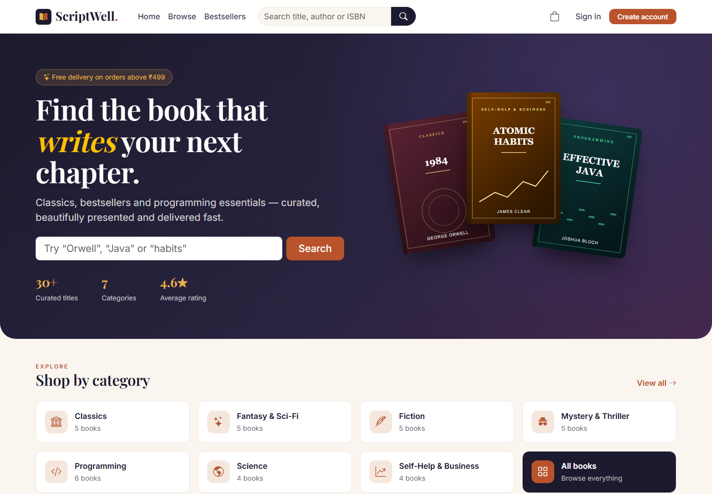
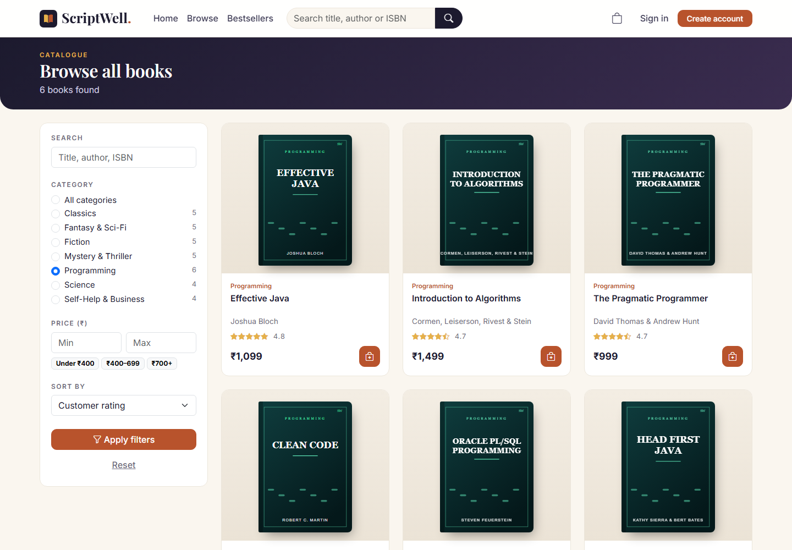
pkg_book.search_books)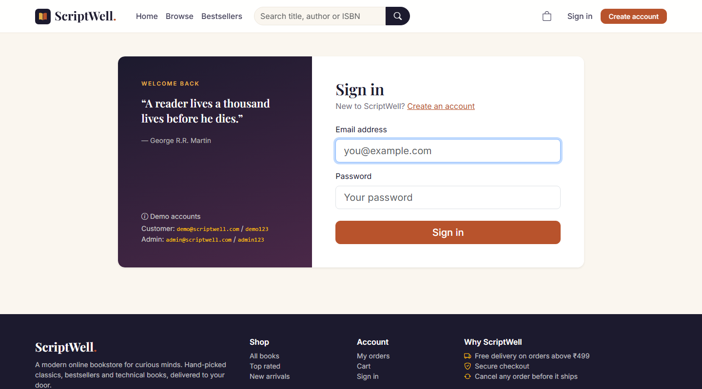
pkg_user.login_user)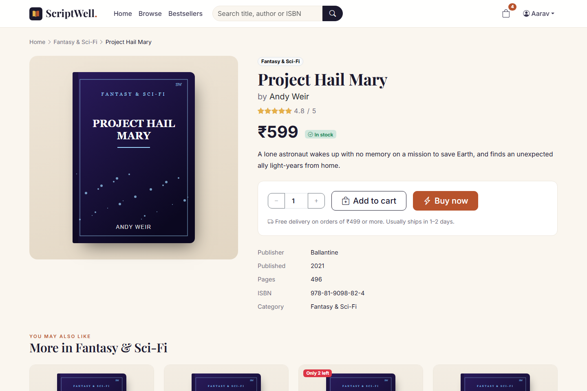
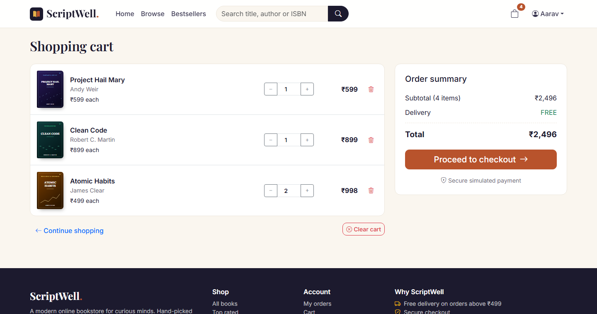
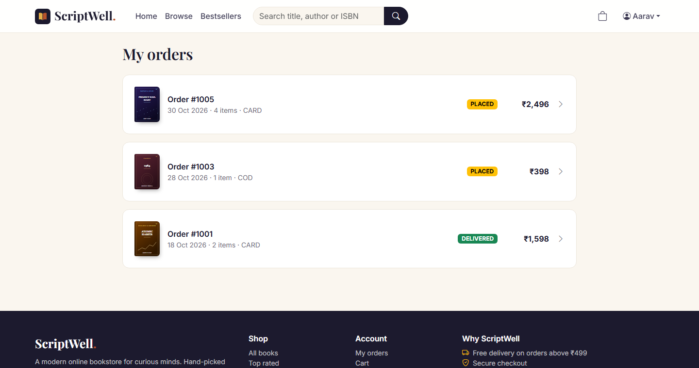
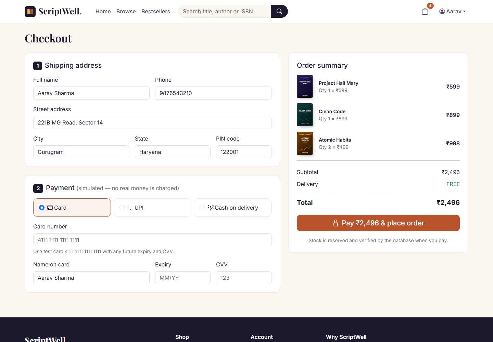
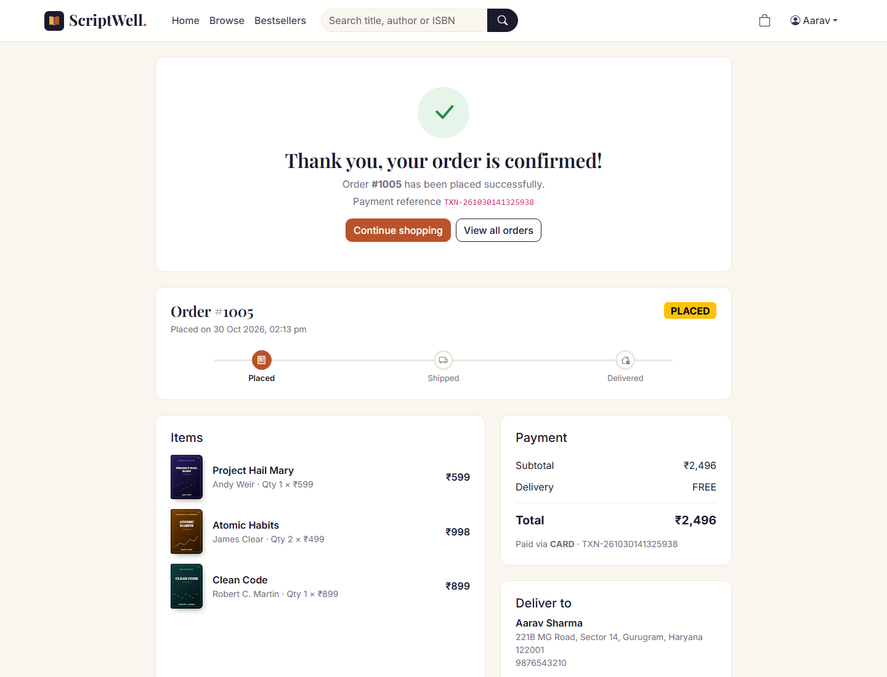
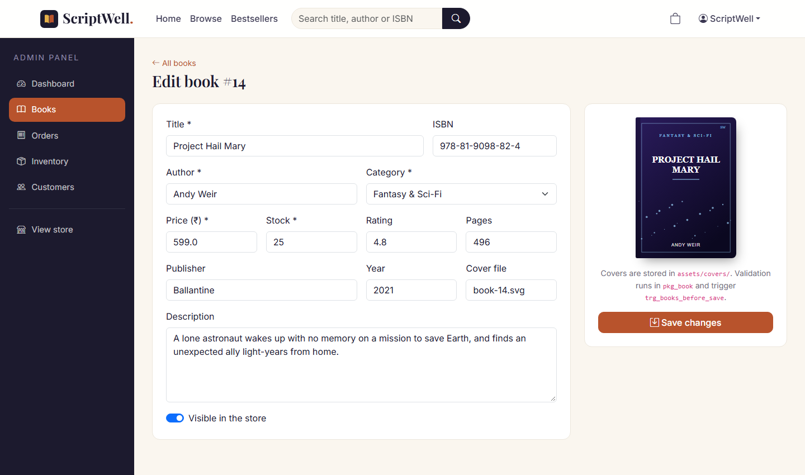
pkg_book and a trigger)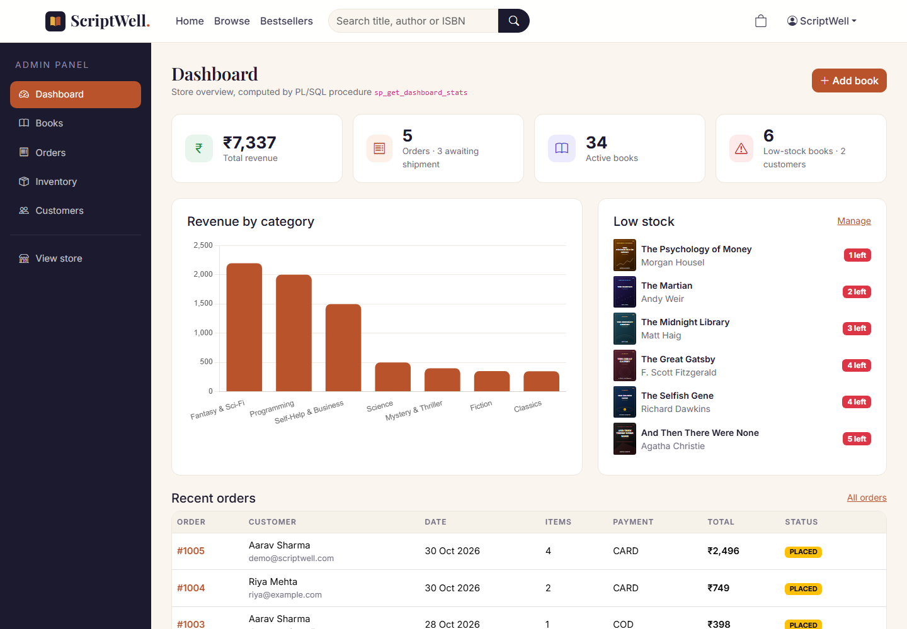
sp_get_dashboard_stats, revenue chart from pkg_order.sales_by_category, low-stock list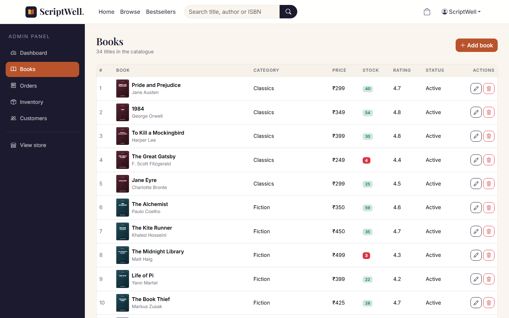
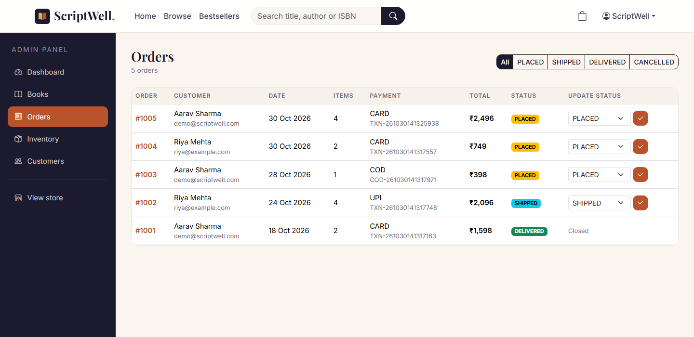
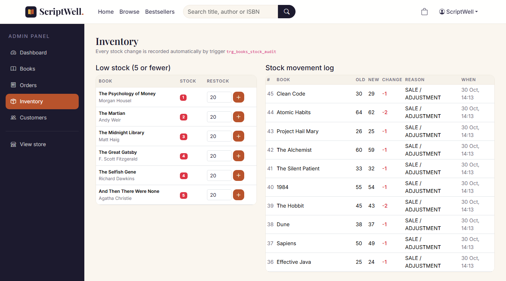
trg_books_stock_audit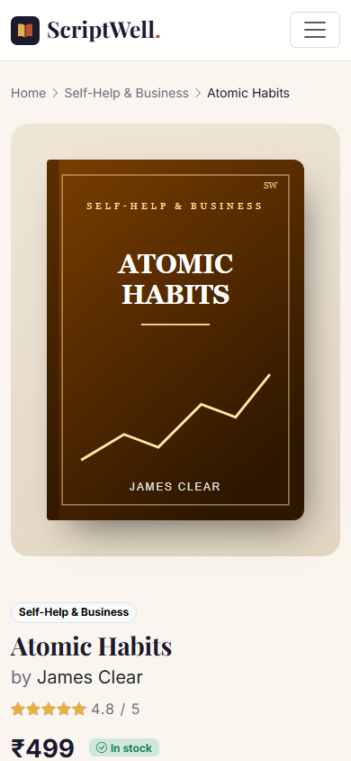
The system was tested at three levels. Unit-level database testing called each PL/SQL program directly in SQL*Plus and checked the results, the triggered audit rows and the raised errors. Integration testing sent real HTTP requests to the deployed application on Tomcat, covering every servlet with valid and invalid input. System and UI testing went through the complete customer and administrator journeys in a browser at desktop and mobile widths. Black-box test cases were designed with equivalence partitioning and boundary values (for example quantity 0, 1, stock and stock + 1).
| TC | Test case / input | Expected result | Status |
|---|---|---|---|
| 01 | Open home, catalogue and book pages | HTTP 200. 8 top-rated cards on home, 34 books in the catalogue | Pass |
| 02 | Search “java” | 2 matching books (Effective Java, Head First Java) | Pass |
| 03 | Category = Programming, sort price high→low | 6 books, most expensive first | Pass |
| 04 | Price range ₹400–₹699 | 16 books, all within range | Pass |
| 05 | Open /book?id=999 | Styled 404 page | Pass |
| 06 | Register with an existing email | “An account with this email already exists” (-20001) | Pass |
| 07 | Register with a 3-character password | Rejected (browser check and -20010 in PL/SQL) | Pass |
| 08 | Login with wrong password | “Invalid email or password” (-20002) | Pass |
| 09 | Login with mixed-case email ADMIN@scriptwell.com | Accepted (email normalised). Admin redirected to dashboard | Pass |
| 10 | Open /cart without logging in | 302 redirect to /login?next=/cart | Pass |
| 11 | AJAX add to cart | JSON {"ok":true,"count":1}, badge updates, toast shown | Pass |
| 12 | Add 5 copies of a book with 1 in stock | “Only 1 copy of … available” (-20003). Cart unchanged | Pass |
| 13 | Update cart quantity to 2 | Line total and summary recalculated (₹1,697) | Pass |
| 14 | Checkout with card 4111 1111 1111 1112 | “Please enter a valid 16-digit card number” (Luhn fails). No order created | Pass |
| 15 | Checkout with valid test card | Order #1005 created, cart emptied, stock reduced, redirected to confirmation | Pass |
| 16 | Buy Now with UPI aarav@okaxis | Order created with one line. Cart left untouched | Pass |
| 17 | Customer opens another customer's order | HTTP 404 (owner check in pkg_order.get_order) | Pass |
| 18 | Customer cancels a PLACED order | Status CANCELLED. Stock restored. Audit row written | Pass |
| 19 | Customer opens /admin | HTTP 403 from AuthFilter | Pass |
| 20 | Admin adds a new book | Book created. INVENTORY_LOG “INITIAL STOCK” row inserted by trigger | Pass |
| 21 | Admin saves a book with price -5 | “Price must be greater than zero”. Form kept | Pass |
| 22 | Admin saves a book with year 2099 | “Publication year cannot be in the future” (trigger) | Pass |
| 23 | Admin deletes a book with no sales / with sales | Deleted / deactivated to keep order history | Pass |
| 24 | Admin restocks a book by +20 | Stock updated. “RESTOCK / RETURN” log row | Pass |
| 25 | Admin reopens a CANCELLED order | “A cancelled order cannot be reopened” (-20009) | Pass |
After the seed script ran (which itself places four orders through the packages), the following queries confirmed that the procedures, functions and triggers worked together correctly:
SQL> SELECT order_id, subtotal, shipping_charge, total_amount, status, payment_method FROM orders;
ORDER_ID SUBTOTAL SHIPPING_CHARGE TOTAL_AMOUNT STATUS PAYMENT_METHOD
1001 1598 0 1598 DELIVERED CARD
1002 2096 0 2096 SHIPPED UPI
1003 349 49 398 PLACED COD
1004 749 0 749 PLACED CARD
SQL> SELECT book_id, old_stock, new_stock, change_qty, reason FROM inventory_log
WHERE reason <> 'INITIAL STOCK';
BOOK_ID OLD_STOCK NEW_STOCK CHANGE_QTY REASON
31 65 64 -1 SALE / ADJUSTMENT
11 45 43 -2 SALE / ADJUSTMENT ... (8 rows)
SQL> SELECT order_id, old_status, new_status, changed_by FROM order_status_audit;
ORDER_ID OLD_STATUS NEW_STATUS CHANGED_BY
1001 PLACED SCRIPTWELL
1001 PLACED DELIVERED SCRIPTWELL ... (6 rows)
SQL> SELECT fn_shipping_charge(300) ship, fn_is_in_stock(34, 5) instock FROM dual; -- 49 N
SQL> SELECT name, type FROM user_errors; -- no rows selected
The project gave hands-on experience of the servlet lifecycle, MVC, sessions, filters, JSTL and AJAX. It also covered PL/SQL package design, cursor-based transactions with row locking, trigger-based auditing and shared error handling between the database and the web tier.
ScriptWell meets all of the stated objectives. It shows that keeping business rules inside Oracle PL/SQL, and calling them through a thin, well-structured Java MVC layer, gives an application that is simpler to reason about, consistent for every client, and robust against concurrent use. At the same time, the modern Bootstrap-based interface gives customers an experience comparable to commercial bookstores. The project is kept to a practical size and every part of it can be explained and demonstrated in a viva.